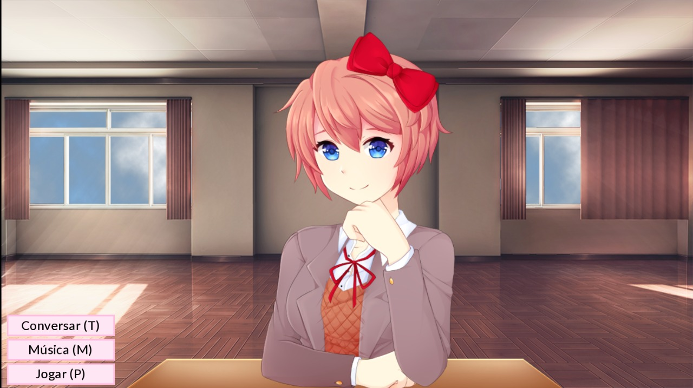

Forever & Ever
"Forever & Ever" é um mod de Doki Doki Clube de Literatura que fornece a você a capacidade de ficar sozinho com Sayori. Este mod foi projetado como Monika After Story, mas tem algumas diferenças até o momento, incluindo a maravilhosa Sayori como a estrela do show.
⬇ Download